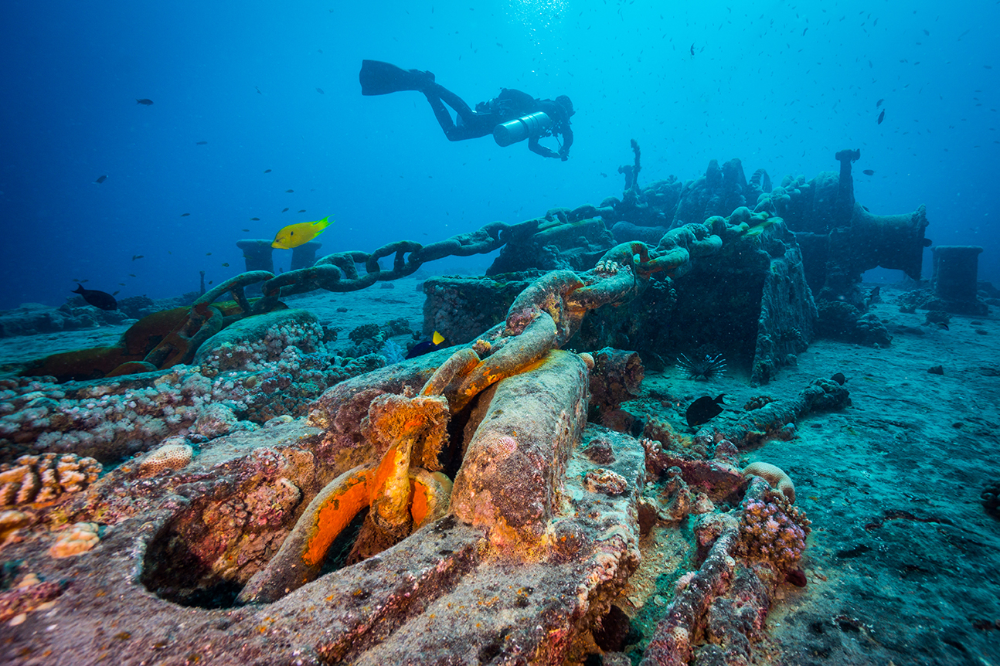
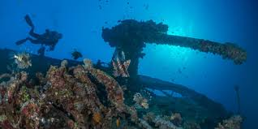
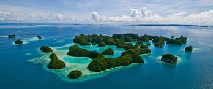
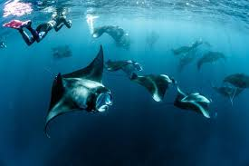
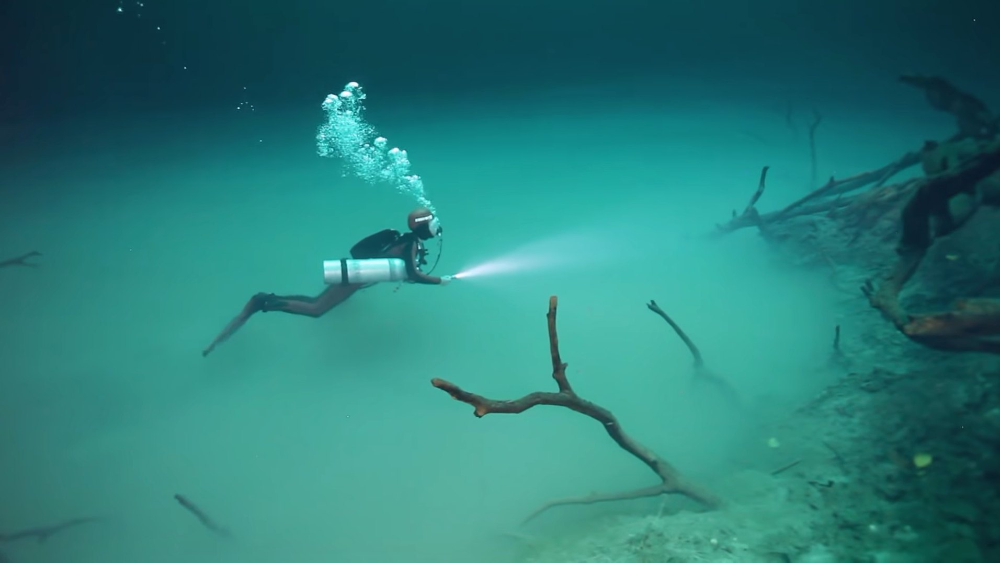
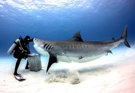
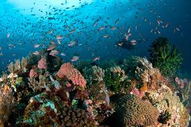
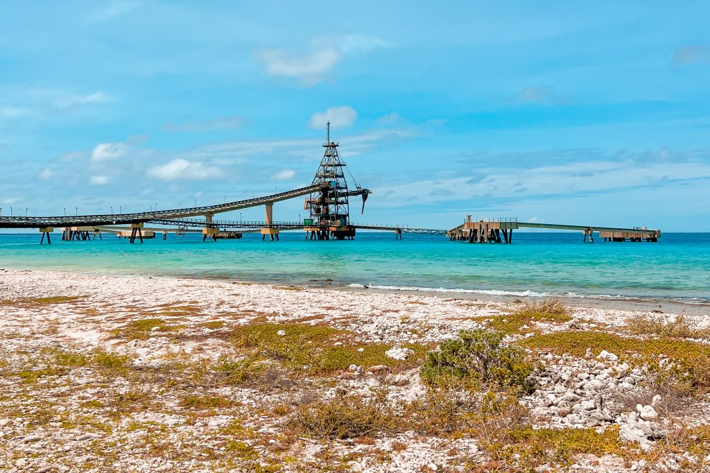

| Bajo Alcyone – Cocos-eiland, Costa Rica |  | SS Thistlegorm – Ras Mohammed, Egypte |  |
| Blue Corner – Ngemelis-eiland, Palau |  | Nachtduik met manta’s Kona, Hawaï |  |
| Cenote Angelita – Tulum, Mexico |  | Tiger Beach – Grand Bahama Island, Bahama’s |  |
| Secret Bay (Mainit Muck) – Anilao, Filipijnen |  | Salt Pier "Bonaire" |  |